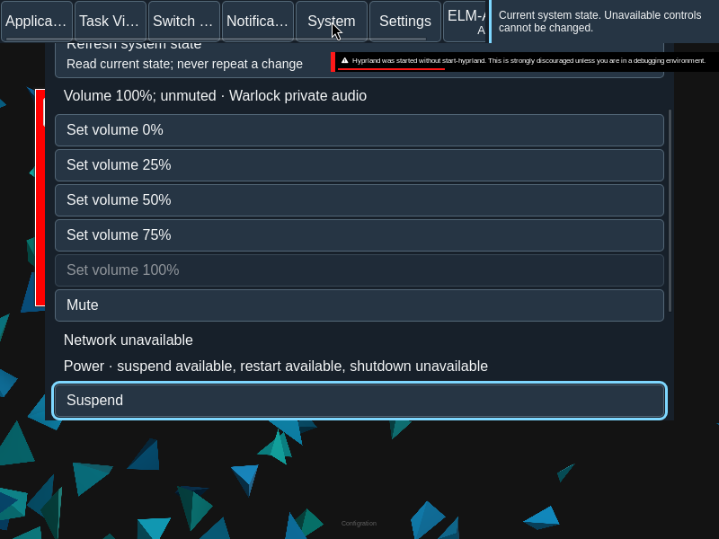

System menu
Inspect system facts and choose operations supported by the current service.
Overview
Inspect system facts and choose operations supported by the current service.
Anatomy
System shows volume, network, power and session facts. Volume uses 0, 25, 50, 75 and 100 percent presets plus Mute or Unmute.
States
Operations are available only when the service exposes the capability. Refresh reads current facts. Requests that are pending or unknown do not become successful merely because they were sent.
Specimen
Real Elm interface. Simulated desktop. Client interiors are fixtures.
Behavior
Each operation is bound to the current service and revision. Refresh reads facts; it does not repeat an operation.
- Volume and mute: available with a volume observation and only when the chosen preset or mute state changes the current value. No confirmation is required.
- Network: enable or disable only when permission allows it and the requested state differs. Disabling requires inline confirmation; enabling does not.
- Suspend: available when the power capability permits it, including a challenge. It does not use the inline confirmation.
- Restart and shut down: available when the corresponding power capability permits it, including a challenge. Each requires inline confirmation.
- Lock session: available when a session is observed and is not already locked. Log out: available when the observed session is not closing; it requires inline confirmation.
Committed means the change was observed. Submitted means the native service accepted the request, not that the operation completed. Refused means the operation was refused or became unavailable. Unknown means its result is not confirmed; refresh reads current facts without replaying the request.
Accessibility
Unavailable operations remain identifiable by label and availability, not color alone. Navigate the presets and operation buttons by keyboard. When confirmation is requested, its Cancel and Confirm controls appear inline; Cancel comes first and returns focus to the System close control. The surface remains usable at enlarged text sizes.
Content
Use the observed volume, network, power and session facts as the source of labels and availability. Name the operation in its confirmation and outcome, especially when a submitted session or power request cannot yet be observed as complete.
Evidence

Captures show the running interface; they are not simulated fixtures.
View SystemMenu source on GitHub (external reference).